Front cover · exterior

Opening

“Look, Daddy! Pearl Castle!”
Story 2–3

Roshan and Daddy landed at Sky Lagoon. Pearl Castle was close by.

“Let’s look inside, Daddy,” said Roshan.
Story 4–5

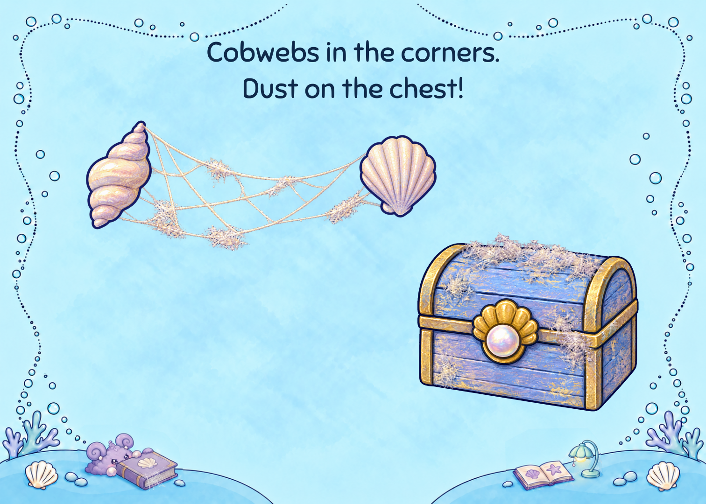
Cobwebs in the corners. Dust on the chest!

Inside, dust covered the floor. “Let’s clean it together!” said Roshan.
Story 6–7

Daddy gave her a brush and some sponges. “One little job at a time.”

A dust bunny splashed in the dirty bath. It loved to play. Splash, splash!
Story 8–9

Round and round went the sponge. Roshan wiped the sink clean.

Roshan let the dirty bath water out. Then she scrubbed the tub. Scrub, scrub!
Story 10–11

Clean water filled the bath. The dust bunny splashed again!

A mermaid named Rumi was stuck under the gunk in the pool.
Story 12–13

Rumi had lived in Pearl Castle for hundreds of years. “I’ll help!” said Roshan. Scoop, scoop!

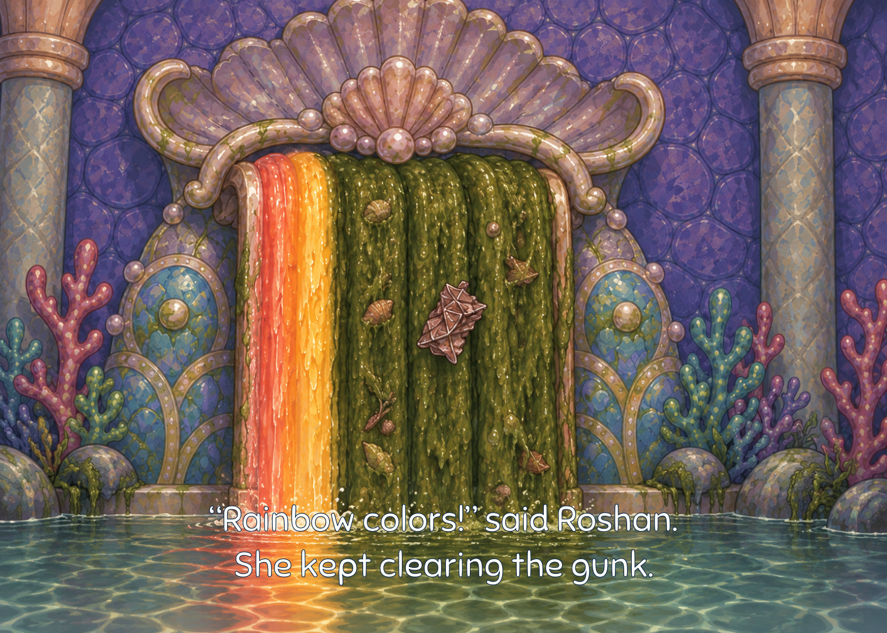
“Rainbow colors!” said Roshan. She kept clearing the gunk.
Story 14–15

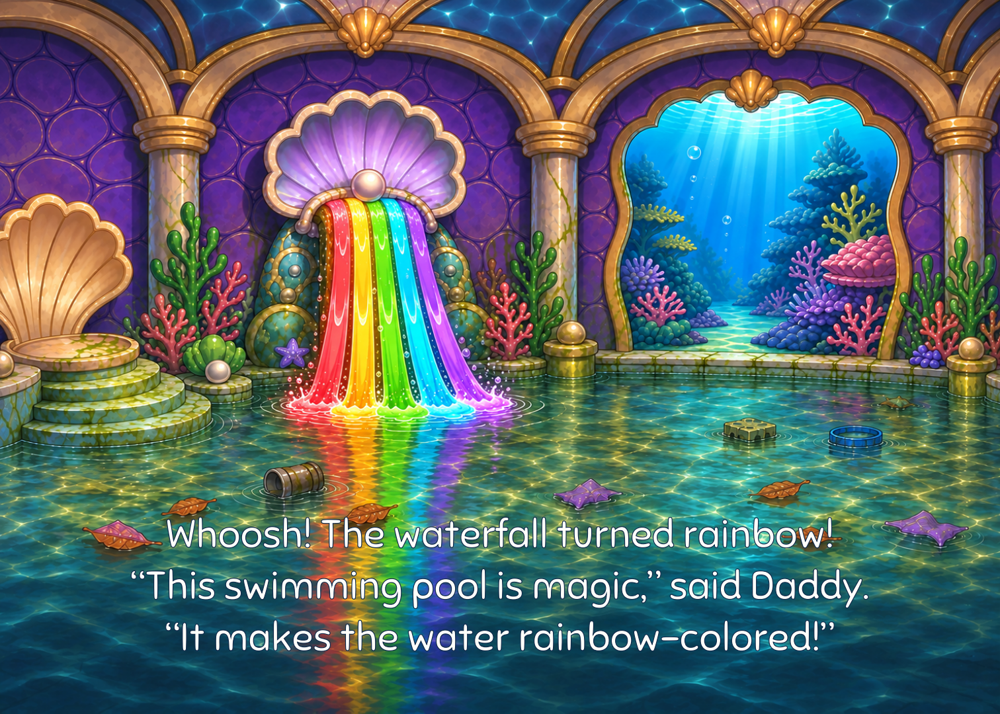
Whoosh! The waterfall turned rainbow! “This swimming pool is magic,” said Daddy. “It makes the water rainbow-colored!”

A cup was stuck in the seahorse fountain. Roshan pulled it free!
Story 16–17

Fresh water flowed. The gunk was gone. Up came Rumi. She was free!

“You helped me!” said Rumi. She gave Roshan a great big hug.
Story 18–19

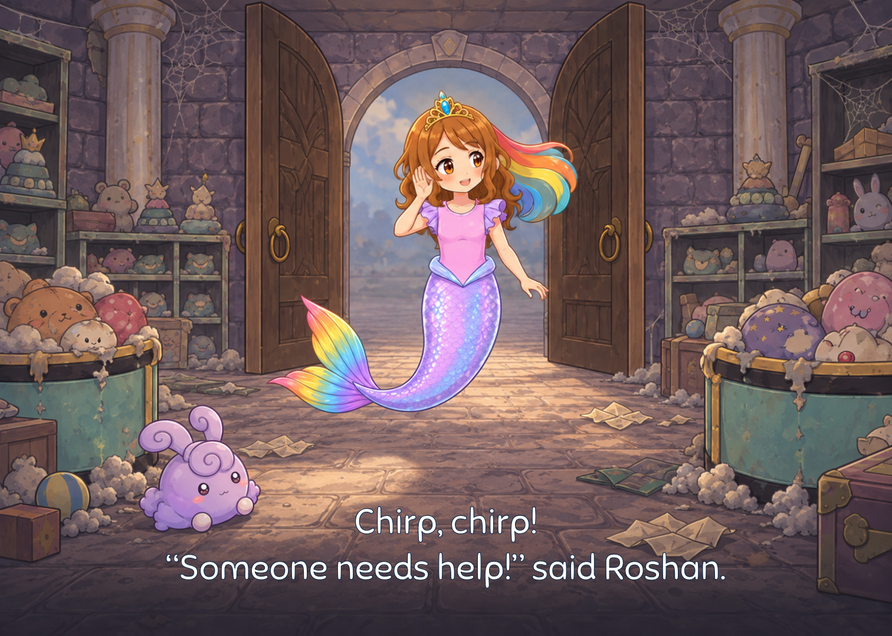
Chirp, chirp! “Someone needs help!” said Roshan.

In the playroom, two dust bunnies sat on Baby Eagle. They wanted to play, but he was stuck.
Story 20–21

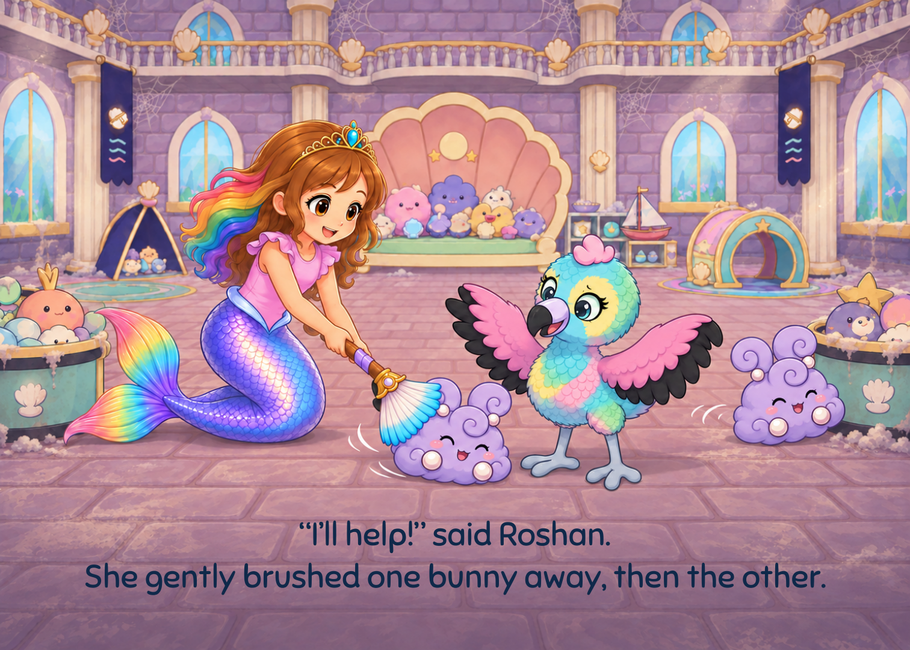
“I’ll help!” said Roshan. She gently brushed one bunny away, then the other.

Baby Eagle was free! “Let’s play gently,” said Roshan.
Story 22–23

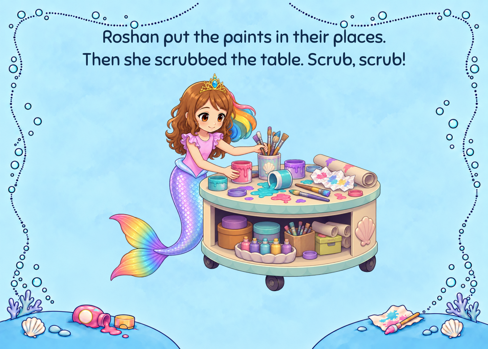
Roshan put the paints in their places. Then she scrubbed the table. Scrub, scrub!

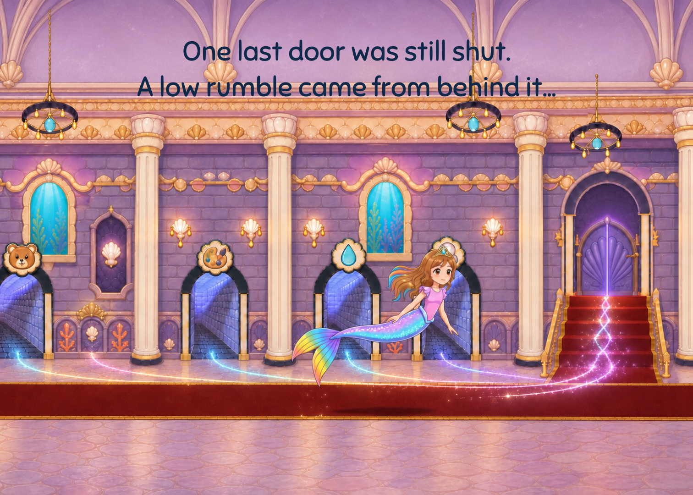
One last door was still shut. A low rumble came from behind it...
Story 24–25

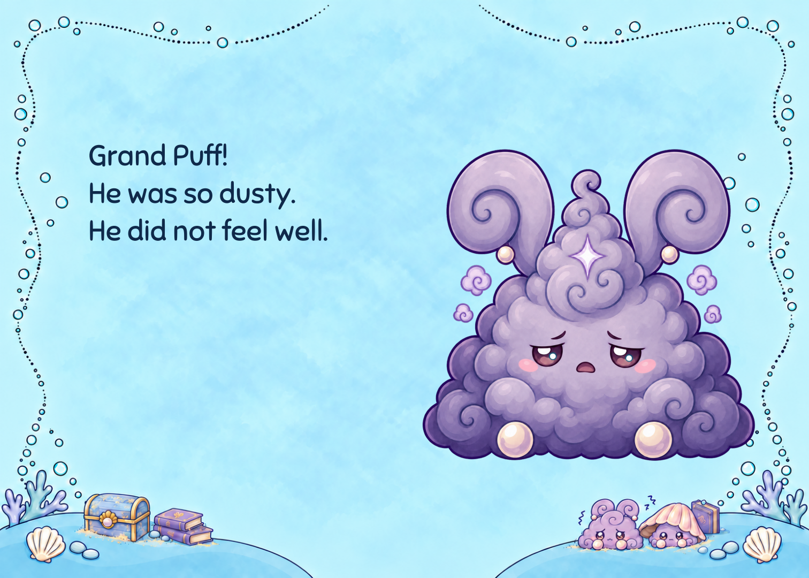
Grand Puff! He was so dusty. He did not feel well.

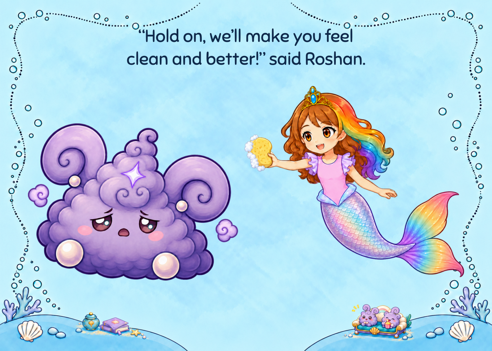
“Hold on, we’ll make you feel clean and better!” said Roshan.
Story 26–27

Daddy, Rumi, and Baby Eagle helped Roshan. Together, they washed Grand Puff. Scrub, scrub!

Soft bubbles covered Grand Puff. Under the bubbles, his colors began to shine.
Story 28–29

POP! Grand Puff sprang out, rainbow bright! The dust fell away.

Down came Grand Puff, soft and small. He felt like himself again.
Story 30–31

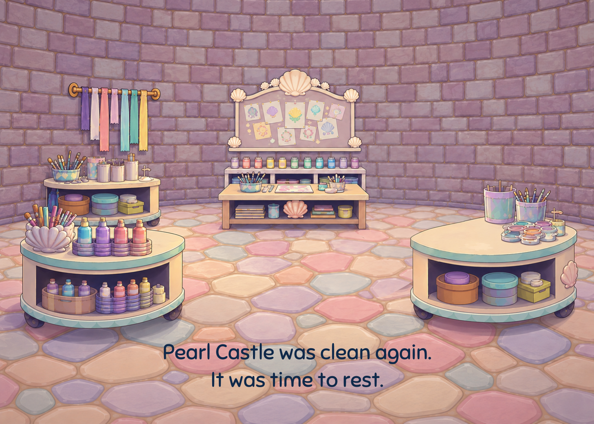
Pearl Castle was clean again. It was time to rest.

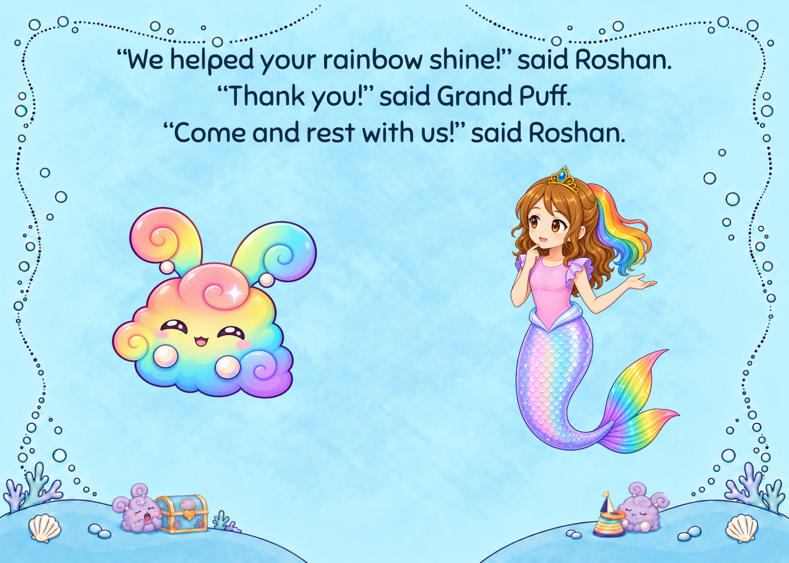
“We helped your rainbow shine!” said Roshan. “Thank you!” said Grand Puff. “Come and rest with us!” said Roshan.
Ending

There was room for everyone. They curled up in the bubbles and fell asleep.
Rear cover · exterior